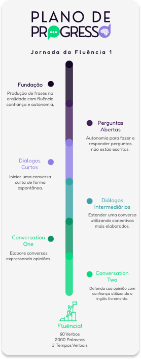

Junte-se a milhares de alunos que já transformaram sua forma de falar inglês! Tenha aulas online flexíveis, adaptadas à sua rotina, e descubra um método eficiente que realmente funciona para você.
000
Sou professor de inglês há mais de 20 anos, morei nos EUA por um tempo (e foi quando descobri que não sabia nada), depois dessa experiência resolvi aprender mais e passei por diversas escolas de idioma como professor, coordenador, diretor pedagógico e sentia que faltava algo, a maior parte dos alunos não conseguia atingir a fluência como era esperado.
Passei a estudar mais sobre o cérebro e como nós aprendemos. Depois de muito estudo, desenvolvi o meu método, cerca de 20 anos atrás, abri minha escola e foi onde realmente coloquei esse método a prova e pude refiná-lo ainda mais.
Hoje eu estou aqui, pronto para entregar o ouro que venho refinando durante anos da minha carreira, mas preciso que você esteja pronto, pois isso pode mudar as oportunidades que vão chegar até você daqui para frente.

Isso não é uma fórmula mágica que você vai comprar e sair falando inglês fluentemente no dia seguinte como outros gurus diriam, mas vou te entregar um MÉTODO simples e eficaz que você poderá aplicar no seu dia a dia e DESTRAVAR de vez a sua fluência.